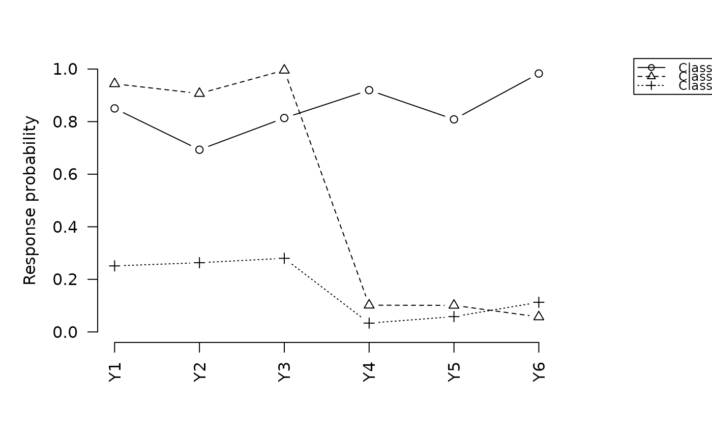
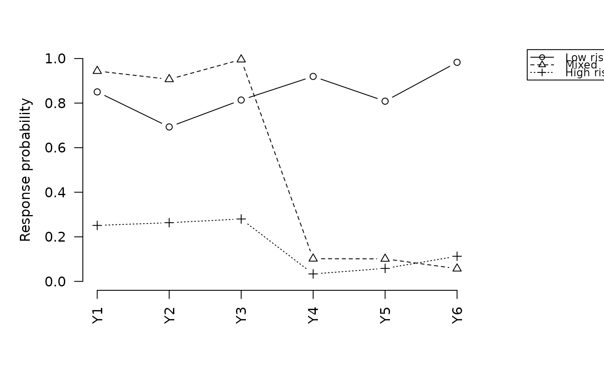

Plot item-response probability profiles for a tseLCA model
Source:R/three_step.R
plot.tseLCA_measurement.RdDelegates to plot.multiLCA from multilevLCA, which draws the
class-specific item-response probability profiles from the Step-1
measurement model.
Usage
# S3 method for class 'tseLCA_measurement'
plot(x, horiz = FALSE, clab = NULL, ...)
# S3 method for class 'tseLCA_covariate'
plot(x, horiz = FALSE, clab = NULL, ...)
# S3 method for class 'tseLCA_distal'
plot(x, horiz = FALSE, clab = NULL, ...)
# S3 method for class 'tseLCA_both'
plot(x, horiz = FALSE, clab = NULL, ...)Arguments
- x
A
tseLCAobject returned bythree_step().- horiz
Logical. If
TRUE, item labels are drawn horizontally.- clab
Optional character vector of length T giving class labels.
- ...
Further arguments passed to
plot.multiLCA.
Examples
d <- generate_data(100, "high", "covariate", seed = 1)
fit_m <- three_step(d, paste0("Y", 1:6), n_classes = 3)
plot(fit_m)

# \donttest{
# Custom class labels
plot(fit_m, clab = c("Low risk", "Mixed", "High risk"))

# }